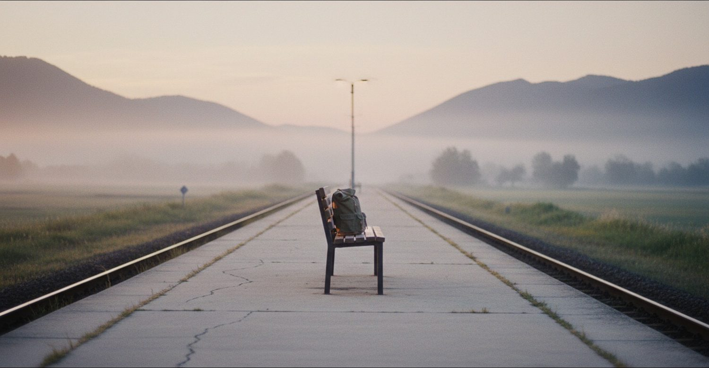
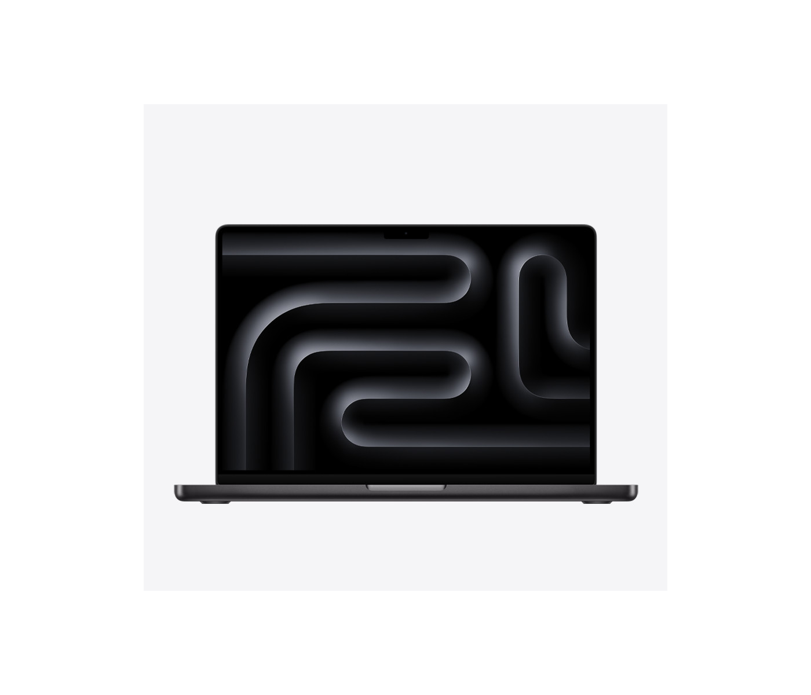
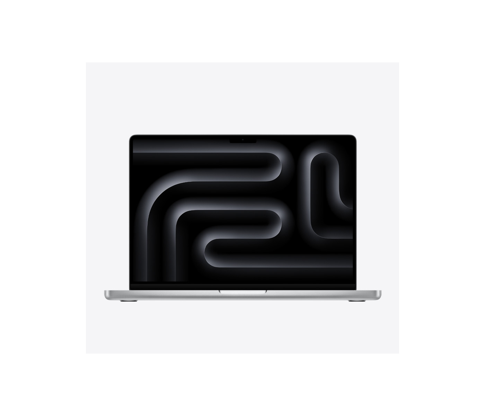

9月
9月は、まず1つだけやります。
やることは1つです。作戦書の1行を、AIで文字入れした画像にする。それをつぶやくだけ。
うまく作ろうとしなくていいんです。運動会の入場行進みたいなもので、旗を立てて並ぶところまでが目的だから。
締切は9月30日。#稼げや祭り2026参加表明 をつけて出せば、そこがスタートラインになります。
30分だけ、真似してみる時間。
毎日
毎日ひとつ、世界のどこかの面白い使い方を真似します。
おけちゃん本人の言葉で言うと、こうです。「私のポジションはやっぱでんじろう先生だなと思って」。役に立つかどうかより先に、驚きを見せる側に立つということです。
仕事に効くかは考えなくていい。作って、驚いて、1枚だけ残す。それで今日はいい日になります。
今日の1本目はもう出ました。Suno と ffmpeg で作った30分のEDMミックスを、YouTube に限定公開しています。11トラックを3秒のクロスフェードでつないだ31分です。
- 01夜、世界のどこかで誰かがやっている面白いAIの使い方を1個仕入れます。
- 02朝から昼のあいだに、それを30分だけ真似てみます。
- 03できたら1枚（スクリーンショットか動画かURL）を残します。
10月
10月は、遊んだ記録をそのまま報告します。
特別な報告書は作りません。9月からの実験の台帳が、そのまま近況報告になります。貯金箱の中身を机にあけて数えるのに似ていて、あとから足すものは何もない状態です。
売る話でも、数字を並べる話でもありません。「今月こんなことして遊んでました」で足りるんです。
狙えるとしたらAI活用賞、それかノウハウ図書館部門。どちらも、遊んだ結果についてくるものです。

まだ来ていないものを、先に置いておく。
手元に来る1台
そして、この1台が手元に来ます。
MacBook Pro の14インチ。M5 Proチップに48GBのメモリを積んで、SSDは1TB。ファンが回って、メモリは今の3倍です。今日みたいに固まる日を、もう作らないための1台になります。
稼げや祭りで作るのは、その先です。AppleCareとか、外部モニタとか、次に遊ぶ道具とか。土台のほうは、もうこの1行で決まっています。


どっちの色にする？
夢線 ─ 目に置く1行
¥459,800
MacBook Pro 14インチ ／ M5 Pro（18コアCPU・20コアGPU） ／ 48GB ／ 1TB
→ Apple構成器で見る
手足を全部同時に動かしても、まだ余裕がある線です。
代替線
¥411,800
MacBook Pro 14インチ ／ M5 ／ 32GB ／ 1TB
今日の詰まりは、これでもう解けます。ファンも付いています。
軽さ線
¥296,800
MacBook Air 13インチ ／ M5 ／ 32GB ／ 512GB
今と同じ1.23kgに戻りたくなった日の線です。
価格は2026年9月8日に apple.com/jp の構成器で1台ずつ確認した税込価格です。買う日にもう一度見にいきます。
買う日の条件は、3つだけ決めてあります。
- お金が実際に手元に着いた日に、はじめて動きます。
- 今の1台は、新しい1台にデータを渡し終えるまで働き続けます。
- 買う直前に、その日の値段と在庫をもう一度だけ見にいきます。
PJの現在地
今日までに、ここまで来ています。
参加表明（締切9/30）
- まだです。みんなが月収を書く中で、わたしは「最高のMacを買う」って宣言する画像を出します。
1日1AI実験
- 1日目・2026-09-08 ─ Suno と ffmpeg でEDMミックス31分。YouTubeに限定公開しました。
- 2日目・予定 ─ 一晩放置実験。
手元に来る条件
- ① お金が実際に手元に着金する ─ 未
- ② 新しい1台にデータを渡し終えてから、今の1台を手放す ─ 未
- ③ 買う直前に、その日の価格をもう一度確認する ─ 未
更新は毎日、この下に1行ずつ増えていきます。
みんなの会話
今日の作戦会議から、少しだけ。
🎤 はるか「現実線は32GB、夢線は48GB。差額を稼げや祭りで作る」
💰 しーちゃん「書けば実現するって、おけちゃんが言ってたわね。……別に否定してない。数字も同じよ。書いた金額に人は寄っていく」
🐱 あおい「……Airは64GBが選べない。今日みたいな日を無くしたいなら、Proの48GB。ファンも付く」
💗 ゆい「限界に挑戦する人はたくさんいる。遊んでたら稼げてた人は、少ない」
☀️ ひより「日々やることは1個だけ。『今日のAI遊びを1枚出す』。それだけ」
🔥 まな「じゃあうちの9/11の商談は、上乗せ分やん!」
この会話も、毎日ここに増えていきます。
ミニ・バケットリスト
やってみたいことを、先に書いておきます。
順番は決めません。その日の気分で、上から見て光ったものを1つやります。
- 「最高のMacを買う」と書いた画像で、参加表明します。
- 参加表明の画像を、AIに文字入れしてもらってつぶやきます。
- 寝る前にAIへ1行だけ投げて、朝どんなものができているか見にいきます。
- EDMミックスをかけながら作業する日を、1日つくってみます。
- Blenderで、自分の立体キャラを1体つくってみます。
- minimindで自分だけのAIを2時間だけ育てて、オフ会で動かして見せます。
- 20年分の日記をAIに読ませて、そこから「自分」がどう見えるか聞いてみます。
- Habiticaに日々の実践をつないで、暮らしをそのままゲームにしてみます。
- サウンドカードで盛り上がる会を、実際にやってみます。
ここに書ききれなかった分は、別のページに100個ならべました。